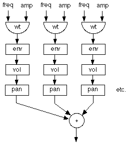

|
|||||||
Additive Synthesis
jMusic can be used to create instruments with all manner of
synthesis systems.
One of the easiest to understand is additive synthesis, where multiple
sine waves of different frequencies are summed.

The final Audio file will sound like this: AddSynthTest.au [1774kb ]
Click here to view source for AddSynthInt.java
Lets have a closer look
There is a constructor that just takes the sampleRate and
provides defaults for all other settings. This provides a tone similar
to the one in the audio example above. To use it create an instrument
like this:
Instrument inst = new AddSynthInst(44100);
Next, let's look at the constructor which sets up all the variables such as frequencies and amplitudes.
public AddSynthInst(int sampleRate, float[] overtoneRatios, |
The audio object organisation shown in the flow chart above is depicted
in jMusic code below, taken from the AddSynthInst class. This shows the
inner workings of the class. The for loop allows the instrument to support
any number of overtones, specified by the number of elements in the arrays
passed to the constructor.
public void createChain(){
|
Now let's look at a class that uses the additive synthesis instrument.
import jm.JMC; |
Try modifying this class to create a more interesting sound by using
the alternate constructor that takes arrays of values.
All instruments in jMusic extend the Instrument class, by doing this they
inherit a great deal of automatic behaviour
that is useful but on no concern for us in this tutorial.
The code above creates four sine waves, each one at a higher frequency
- specified by the setfrqRatio() method.
Each overtone is also at a different loudness - higher frequencies are
at lower levels, as is common in natural sounds.
These harmonics are added together, passed through an amplitude envelope
object, panned as appropriate for the note,
then written to an audio file on disk.
Musical Example
import jm.JMC; |
The code above uses the instrument to render a simple jMusic score that has just one note.